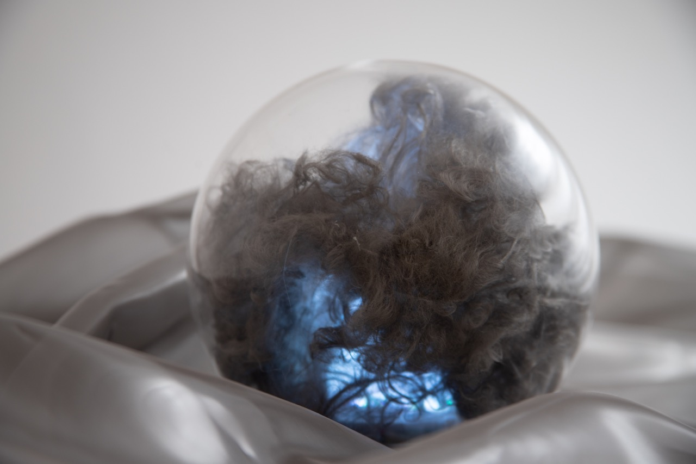
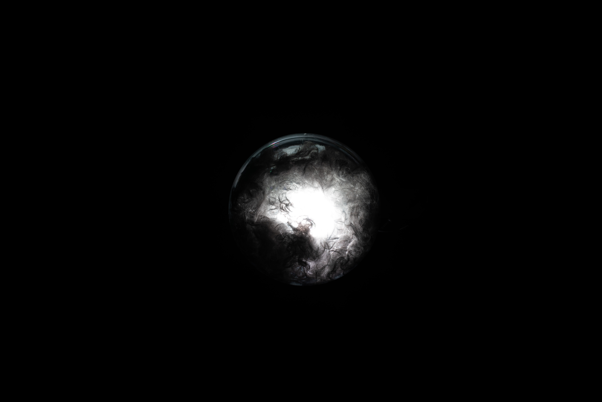
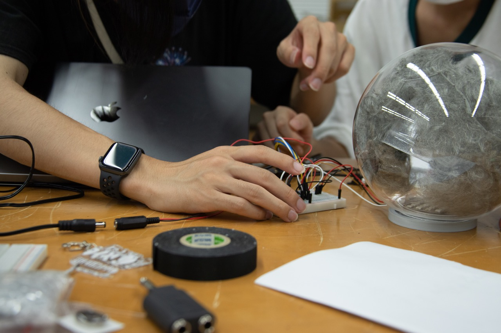

四季折の月
Electronic work, 2022
Sakiko Kanemachi, Natsuha Nakamura

【説明】
廃棄されてしまうステンレスメッシュの糸の情緒的な美しさに魅了され、その淡い反射効果を活かし、月面をイメージしたランプを制作しようと考えました。
ライトの色や明度の変化により四季折々の月の表情を再現し、長く大切にしたくなるランプになることを願っています。
【ステンレスメッシュの線屑とは？】
ステンレスメッシュ(金属の織物)の製造過程で排出される線屑。製品として使用される部分は、織物となっ ている生地の部分のみのため、生地の端である線屑や経糸のみの部分は製品としての利用は叶わず、リサイクルされている。
ランプのLEDライトを動かす、制御盤の制作やプログラムを組み、ランプがタッチボタンで調光調色できるようにしました。

